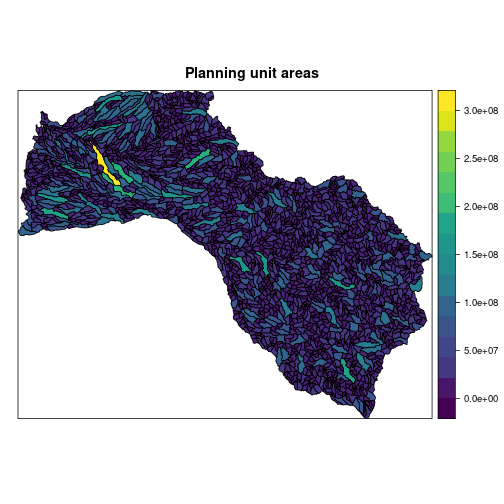
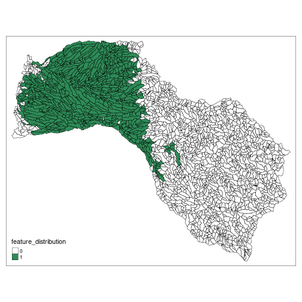
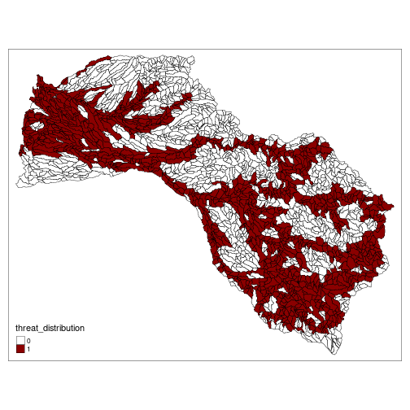
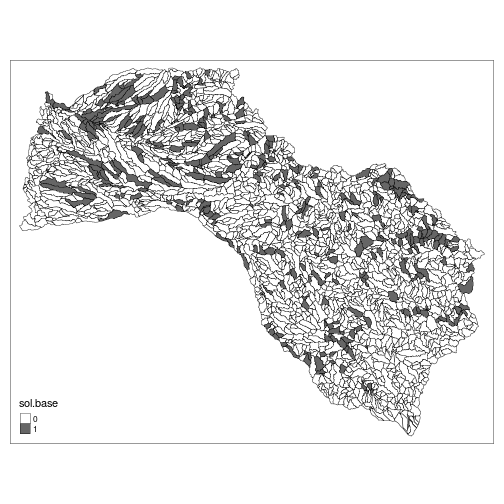
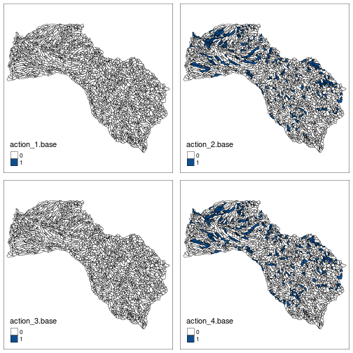
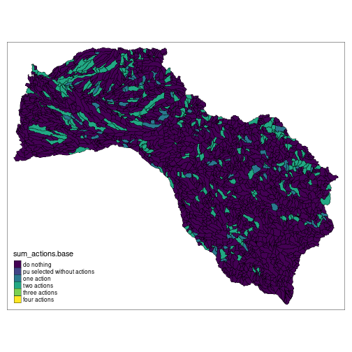
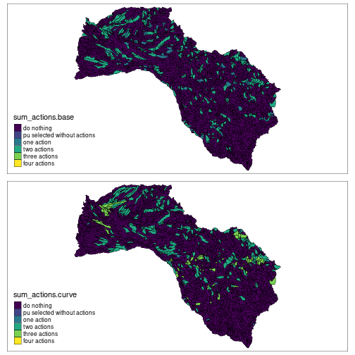
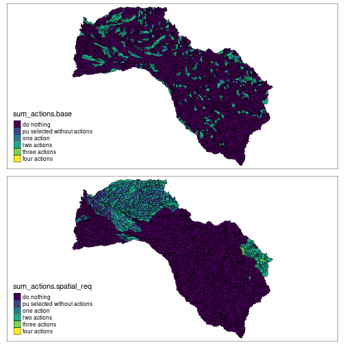
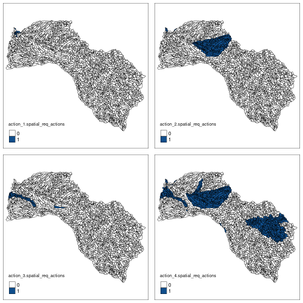

The Mitchell River is a river located in Far North Queensland, Australia. The river rises on the Atherton Tableland about 50 kilometres (31 mi) northwest of Cairns, and flows about 750 kilometres (470 mi) northwest across Cape York Peninsula from Mareeba to the Gulf of Carpentaria. we will use this case study to present some functionalities of the prioriactions package.
We started loading libraries:
library(prioriactions)
library(raster) #To plot of shapefiles
library(tmap) #To create cool maps
library(scales) #To standardize the value of amount
library(reshape2) #To use the melt function
library(sp) #To use the spplot function
library(viridis) #To use viridis palleteWe divided the whole catchment (71,630 km2 into 2316 sites (i.e., sub-catchments), each one included the portion of river length between two consecutive river connections. We considered four major threats to freshwater fish species in the catchment: water buffalo (Bubalis bubalis), cane toad (Bufo marinus), river flow alteration (caused by impoundments, channels for water extractions and levee banks) and grazing land use. Also, we used the modelled spatial distribution of 45 fish species in the Mitchell river catchment as our conservation features. The distribution of features and threats will be simulated while the other input files a prioriactions will be loaded directly from the package as follows:
path <- system.file("extdata/mitchell_vignette_data/", package = "prioriactions")
pu_data <- data.table::fread(paste0(path,"pu_mitchell.csv"), data.table = FALSE)
features_data <- data.table::fread(paste0(path,"features_mitchell.csv"), data.table = FALSE)
dist_features_data <- data.table::fread(paste0(path,"dist_features_mitchell.csv"), data.table = FALSE)
threats_data <- data.table::fread(paste0(path,"threats_mitchell.csv"), data.table = FALSE)
dist_threats_data <- data.table::fread(paste0(path,"dist_threats_mitchell.csv"), data.table = FALSE)
bound_data <- data.table::fread(paste0(path,"boundary_mitchell.csv"), data.table = FALSE)
sensitivity_data <- data.table::fread(paste0(path,"sensibility_mitchell.csv"), data.table = FALSE)We load the shapefile of the case study also included as part of the package installation:
#reading shapefile
shp_mitchell = raster::shapefile("data/Fish_Mitchell.shp")
sp::spplot(shp_mitchell, zcol = "Shape_Area", names.attr = "Area",
main = "Planning unit areas", col.regions = viridis::viridis(20))
Now, we can plot different distributions of features or threats on the shapefile loaded. To do it, we can assign the values from tabular input to some shapefile field:
# load amount of dist_features data
dist_features <- reshape2::dcast(dist_features_data, pu~feature,value.var = "amount",
fill = 0)
#Assign the distribution of first feature to feature_distribution field in the shapefile
shp_mitchell$feature_distribution <- dist_features[, 2]
#Plot distribution with tmap library
tmap::tm_shape(shp_mitchell) +
tmap::tm_fill("feature_distribution", pal = c("white", "seagreen"), labels = c("0", "1"), breaks = c(0,1,2)) +
tmap::tm_borders(col="black", lwd = 0.5)
In the same way, we can observe the distributions of some threats:
# load amount of dist_threats data
dist_threats <- reshape2::dcast(dist_threats_data, pu~threat,value.var = "amount", fill = 0)
#Assign the distribution of third threat to feature_distribution field in the shapefile
shp_mitchell$threat_distribution <- dist_threats[, 4]
#Plot distribution with tmap library
tmap::tm_shape(shp_mitchell) +
tmap::tm_fill("threat_distribution", pal = c("white", "red4"), labels = c("0", "1"), breaks = c(0,1,2)) +
tmap::tm_borders(col="black", lwd = 0.5)
First, our base model considers the prioritization of conservation actions using previously loaded data. Note that for both features and threats we have presence/absence values (binary values). Some of the characteristics of the base model are the following:
minimiCosts() function to minimize costs by reaching 15% of the maximum target per feature.recovery param equal to FALSE).We proceed to Step 1, loading the data in the prioriactions package:
input_data <- prioriactions::problem(
pu = pu_data, features = features_data, dist_features = dist_features_data,
threats = threats_data, dist_threats = dist_threats_data, sensitivity = sensitivity_data,
bound = bound_data
)
input_data
#> Conservation Problem
#> planning units: data.frame (2316 units)
#> unit costs: min: 1, max: 1
#> features: scl_ja, nem_er, thr_sc, ... (45 features)
#> threats: threat1, threat2, threat3, threat4 (4 threats)
#> threat costs: min: 1, max: 1Note that currently, the target values are not located at 15%. For this, we can use the getbenefit() function and assign it to the corresponding column of the feature data input and create the object ConservationProblem-class again.
maximum_benefits <- prioriactions::getBenefit(input_data)
head(maximum_benefits)
#> feature dist dist_threatened benefit.nothing benefit.recovery benefit.total
#> 1 1 692 692 0 692 692
#> 2 2 1052 1052 0 1052 1052
#> 3 3 416 416 0 416 416
#> 4 4 653 653 0 653 653
#> 5 5 238 238 0 238 238
#> 6 6 276 276 0 276 276Then,
features_data$target <- maximum_benefits$benefit.total * 0.15
input_data <- prioriactions::problem(
pu = pu_data, features = features_data, dist_features = dist_features_data,
threats = threats_data, dist_threats = dist_threats_data, sensitivity = sensitivity_data,
bound = bound_data
)
input_data
#> Conservation Problem
#> planning units: data.frame (2316 units)
#> unit costs: min: 1, max: 1
#> features: scl_ja, nem_er, thr_sc, ... (45 features)
#> threats: threat1, threat2, threat3, threat4 (4 threats)
#> threat costs: min: 1, max: 1Now, we can proceed to Step 2 and to create the mathematical model. Fot this, we use minimizeCosts() function with curve = 1 and recovery = FALSE parameters.`
model.base <- prioriactions::minimizeCosts(input_data, blm = 0, curve = 1, recovery = FALSE)
#> Warning: The blm argument was set to 0, so the boundary data has no effect
#> Warning: Some blm_actions argument were set to 0, so the boundary data has no
#> effect for these cases
model.base
#> Optimization Problem
#> model sense: minimization
#> dimensions: 37326, 43180, 2232.44 kB (nrow, ncol, size)
#> variables: 43180Note that the dimensions of the model are 37326 mathematical constraints and 43180 variables. For Step 3, the solver was configured to stop when a gap of at least 5% is achieved (0% meaning that at least one of the optimal solutions has been found).
solution.base <- prioriactions::solve(model.base, gap_limit = 0.05, verbose = TRUE, output_file = FALSE)
#> Gurobi Optimizer version 9.1.2 build v9.1.2rc0 (linux64)
#> Thread count: 2 physical cores, 4 logical processors, using up to 2 threads
#> Optimize a model with 37326 rows, 43180 columns and 136566 nonzeros
#> Model fingerprint: 0x5d86b8f8
#> Variable types: 34965 continuous, 8215 integer (8215 binary)
#> Coefficient statistics:
#> Matrix range [3e-01, 4e+00]
#> Objective range [1e+00, 1e+00]
#> Bounds range [1e+00, 1e+00]
#> RHS range [8e-01, 3e+02]
#> Found heuristic solution: objective 7947.0000000
#> Found heuristic solution: objective 2501.0000000
#> Presolve removed 32114 rows and 32399 columns
#> Presolve time: 0.14s
#> Presolved: 5212 rows, 10781 columns, 52398 nonzeros
#> Variable types: 0 continuous, 10781 integer (7911 binary)
#>
#> Root relaxation: objective 8.547500e+02, 8349 iterations, 0.17 seconds
#>
#> Nodes | Current Node | Objective Bounds | Work
#> Expl Unexpl | Obj Depth IntInf | Incumbent BestBd Gap | It/Node Time
#>
#> 0 0 854.75000 0 390 2501.00000 854.75000 65.8% - 0s
#> H 0 0 1023.0000000 854.75000 16.4% - 0s
#> H 0 0 994.0000000 854.75000 14.0% - 0s
#> 0 0 869.82540 0 434 994.00000 869.82540 12.5% - 0s
#> 0 0 870.30922 0 437 994.00000 870.30922 12.4% - 0s
#> 0 0 908.25926 0 517 994.00000 908.25926 8.63% - 1s
#> 0 0 914.53704 0 382 994.00000 914.53704 7.99% - 1s
#> 0 0 942.50000 0 144 994.00000 942.50000 5.18% - 1s
#> H 0 0 991.0000000 942.50000 4.89% - 1s
#>
#> Cutting planes:
#> Gomory: 297
#> Cover: 665
#> Implied bound: 821
#> Clique: 3
#> MIR: 188
#> Flow cover: 1285
#> Relax-and-lift: 1
#>
#> Explored 1 nodes (17828 simplex iterations) in 1.49 seconds
#> Thread count was 2 (of 4 available processors)
#>
#> Solution count 5: 991 994 1023 ... 7947
#>
#> Optimal solution found (tolerance 5.00e-02)
#> Best objective 9.910000000000e+02, best bound 9.430000000000e+02, gap 4.8436%We have achieved a gap of 4.44% and a objective value of 989. To obtain the distribution of conservation actions we use the getActions() function, while that to obtain the vector of units that are incorporated into the conservation plan we use the getPlanningUnits() function. Note that since we not use a recovery model, the planning units may be selected without performing actions on it.
#Getting unit distribution selected
solution_units.base <- prioriactions::getPlanningUnits(solution.base)
#Assign solution to shapefile field to plot it
shp_mitchell$sol.base <- solution_units.base$solution
#Plot of action 1 distribution
tmap::tm_shape(shp_mitchell) +
tmap::tm_fill("sol.base", pal = c("white", "gray40"), labels = c("0", "1"), breaks = c(0,1,2)) +
tmap::tm_borders(col="black", lwd = 0.5)
Whereas, if we want to obtain the actions to be carried out within the sites:
#Getting action distribution
solution_actions.base <- prioriactions::getActions(solution.base, format = "wide")
#Assign solution to shapefile field to plot it
shp_mitchell$action_1.base <- solution_actions.base$`1`
shp_mitchell$action_2.base <- solution_actions.base$`2`
shp_mitchell$action_3.base <- solution_actions.base$`3`
shp_mitchell$action_4.base <- solution_actions.base$`4`
#Actions plots
plot_action1.base <- tmap::tm_shape(shp_mitchell) +
tmap::tm_fill("action_1.base", pal = c("white", "dodgerblue4"), labels = c("0", "1"), breaks = c(0,1,2)) +
tmap::tm_borders(col="black", lwd = 0.5)
plot_action2.base <- tmap::tm_shape(shp_mitchell) +
tmap::tm_fill("action_2.base", pal = c("white", "dodgerblue4"), labels = c("0", "1"), breaks = c(0,1,2)) +
tmap::tm_borders(col="black", lwd = 0.5)
plot_action3.base <- tmap::tm_shape(shp_mitchell) +
tmap::tm_fill("action_3.base", pal = c("white", "dodgerblue4"), labels = c("0", "1"), breaks = c(0,1,2)) +
tmap::tm_borders(col="black", lwd = 0.5)
plot_action4.base <- tmap::tm_shape(shp_mitchell) +
tmap::tm_fill("action_4.base", pal = c("white", "dodgerblue4"), labels = c("0", "1"), breaks = c(0,1,2)) +
tmap::tm_borders(col="black", lwd = 0.5)
tmap::tmap_arrange(plot_action1.base , plot_action2.base , plot_action3.base , plot_action4.base)
Or the distribution of the sum of the actions (higher density of actions):
shp_mitchell$sum_actions.base <- solution_units.base$solution + solution_actions.base$`1` + solution_actions.base$`2` + solution_actions.base$`3` + solution_actions.base$`4`
#Plot som of actions with tmap library
plot.base <- tmap::tm_shape(shp_mitchell) +
tmap::tm_fill("sum_actions.base", palette="viridis", labels = c("do nothing", "pu selected without actions", "one action", "two actions", "three actions", "four actions"), breaks = c(0,1,2,3,4,5,6)) +
tmap::tm_borders(col="black", lwd = 0.5)
plot.base The results of this base model will be compared with the subsequent models generated.
This model differs from the previous one in that it tries to group conservation actions within the selected sites as part of the management plan (through a non-linear relationship in the calculation of benefits). The latter is done by adding a value other than 1 to the curve parameter. Where: (1) indicates that there is a linear relationship between the quotient between the actions carried out with respect to the possible actions to be carried out with respect to the benefit obtained by a characteristic. (2) indicates a quadratic relationship between these values, and (3) a cubic relationship. In simple terms, the cubic relationship further penalizes not performing all conservation actions at a site for a particular feature.
model.curve <- prioriactions::minimizeCosts(input_data, blm = 0, curve = 3, recovery = FALSE)
#> Warning: The blm argument was set to 0, so the boundary data has no effect
#> Warning: Some blm_actions argument were set to 0, so the boundary data has no
#> effect for these cases
model.curve
#> Optimization Problem
#> model sense: minimization
#> dimensions: 37326, 78145, 2372.296 kB (nrow, ncol, size)
#> variables: 78145Note that the new model increased its dimensions compared to the previous one (from 43180 to 78145 variables), and therefore, increasing its resolution complexity. In this way, we obtain a value of the objective function of 1052 (greater than the previous one) but with a quality of 9.78%.
solution.curve <- prioriactions::solve(model.curve, gap_limit = 0.1, verbose = TRUE, output_file = FALSE)
#> Gurobi Optimizer version 9.1.2 build v9.1.2rc0 (linux64)
#> Thread count: 2 physical cores, 4 logical processors, using up to 2 threads
#> Optimize a model with 37326 rows, 78145 columns and 136566 nonzeros
#> Model fingerprint: 0x066274b7
#> Model has 34965 general constraints
#> Variable types: 69930 continuous, 8215 integer (8215 binary)
#> Coefficient statistics:
#> Matrix range [3e-01, 4e+00]
#> Objective range [1e+00, 1e+00]
#> Bounds range [1e+00, 1e+00]
#> RHS range [8e-01, 3e+02]
#> Found heuristic solution: objective 8215.0000000
#> Presolve added 72781 rows and 142426 columns
#> Presolve time: 0.84s
#> Presolved: 110107 rows, 220571 columns, 576873 nonzeros
#> Presolved model has 34965 SOS constraint(s)
#> Found heuristic solution: objective 7947.0000000
#> Variable types: 209790 continuous, 10781 integer (7911 binary)
#>
#> Deterministic concurrent LP optimizer: primal and dual simplex
#> Showing first log only...
#>
#>
#> Root simplex log...
#>
#> Iteration Objective Primal Inf. Dual Inf. Time
#> 0 0.0000000e+00 5.244750e+03 2.723276e+10 2s
#> 7465 9.9451774e+02 3.100000e+01 6.200683e+07 2s
#> 13086 8.7915756e+02 0.000000e+00 1.379465e+02 3s
#> 19052 8.6380893e+02 0.000000e+00 3.635683e+01 4s
#> 22220 8.5643689e+02 0.000000e+00 9.846525e+01 5s
#> 25615 8.5417500e+02 0.000000e+00 0.000000e+00 6s
#> 25615 8.5417500e+02 0.000000e+00 0.000000e+00 6s
#> Concurrent spin time: 4.33s
#>
#> Solved with primal simplex
#>
#> Root relaxation: objective 8.541750e+02, 25615 iterations, 8.98 seconds
#> Total elapsed time = 11.33s
#> Total elapsed time = 12.45s
#>
#> Nodes | Current Node | Objective Bounds | Work
#> Expl Unexpl | Obj Depth IntInf | Incumbent BestBd Gap | It/Node Time
#>
#> 0 0 854.17500 0 4596 7947.00000 854.17500 89.3% - 13s
#> H 0 0 7926.0000000 854.17500 89.2% - 13s
#> 0 0 858.60000 0 6922 7926.00000 858.60000 89.2% - 16s
#> H 0 0 1738.0000000 858.60000 50.6% - 18s
#> 0 0 865.12576 0 8858 1738.00000 865.12576 50.2% - 20s
#> 0 0 875.84799 0 5982 1738.00000 875.84799 49.6% - 21s
#> 0 0 876.30324 0 5927 1738.00000 876.30324 49.6% - 21s
#> 0 0 893.25556 0 6142 1738.00000 893.25556 48.6% - 24s
#> 0 0 914.94879 0 3416 1738.00000 914.94879 47.4% - 26s
#> 0 0 914.94879 0 3313 1738.00000 914.94879 47.4% - 26s
#> 0 0 925.64493 0 1764 1738.00000 925.64493 46.7% - 29s
#> H 0 0 1131.0000000 925.64493 18.2% - 37s
#> 0 0 949.11667 0 1661 1131.00000 949.11667 16.1% - 38s
#> 0 0 949.11667 0 1431 1131.00000 949.11667 16.1% - 38s
#> 0 0 949.11667 0 1451 1131.00000 949.11667 16.1% - 40s
#> H 0 0 1126.0000000 949.11667 15.7% - 42s
#> 0 0 949.11667 0 1875 1126.00000 949.11667 15.7% - 42s
#> 0 0 949.11667 0 1595 1126.00000 949.11667 15.7% - 44s
#> 0 0 949.11667 0 1371 1126.00000 949.11667 15.7% - 47s
#> 0 2 949.11667 0 1371 1126.00000 949.11667 15.7% - 55s
#> 1 4 949.11667 1 1424 1126.00000 949.11667 15.7% 965 56s
#> 3 6 949.11667 2 1392 1126.00000 949.11667 15.7% 484 57s
#> 5 8 949.11667 2 1377 1126.00000 949.11667 15.7% 542 58s
#> 7 10 949.78333 3 1407 1126.00000 949.11667 15.7% 504 59s
#> 14 17 949.78333 6 1411 1126.00000 949.11667 15.7% 265 60s
#> 24 30 950.70000 10 1414 1126.00000 949.11667 15.7% 162 64s
#> H 26 30 1119.0000000 949.11667 15.2% 150 64s
#> H 27 30 1113.0000000 949.11667 14.7% 145 64s
#> 29 45 950.70000 12 1413 1113.00000 949.11667 14.7% 136 66s
#> 44 58 949.90000 18 1409 1113.00000 949.11667 14.7% 94.7 70s
#> H 52 58 1098.0000000 949.11667 13.6% 82.0 70s
#> 57 76 950.70000 24 1421 1098.00000 949.11667 13.6% 75.8 71s
#> 75 85 950.25000 34 1435 1098.00000 949.11667 13.6% 59.8 74s
#> H 78 85 1082.0000000 949.11667 12.3% 57.6 74s
#> 84 106 950.25000 38 1437 1082.00000 949.11667 12.3% 54.6 75s
#> 103 106 950.70000 11 1469 1082.00000 949.11667 12.3% 46.4 76s
#> H 105 114 1066.0000000 949.11667 11.0% 45.8 77s
#> H 112 114 1062.0000000 949.11667 10.6% 44.3 77s
#> 113 135 950.25000 55 1478 1062.00000 949.11667 10.6% 43.9 83s
#> H 132 135 1055.0000000 949.11667 10.0% 38.5 83s
#>
#> Cutting planes:
#> Gomory: 294
#> Cover: 696
#> Implied bound: 23508
#> Clique: 45
#> MIR: 191
#> StrongCG: 1
#> Flow cover: 2252
#> Network: 6
#> RLT: 11
#> Relax-and-lift: 11129
#>
#> Explored 134 nodes (55056 simplex iterations) in 83.16 seconds
#> Thread count was 2 (of 4 available processors)
#>
#> Solution count 10: 1055 1062 1066 ... 1738
#>
#> Optimal solution found (tolerance 1.00e-01)
#> Warning: max constraint violation (2.8000e-02) exceeds tolerance
#> Warning: max general constraint violation (2.8000e-02) exceeds tolerance
#> (model may be infeasible or unbounded - try turning presolve off)
#> Best objective 1.055000000000e+03, best bound 9.500000000000e+02, gap 9.9526%
#Getting unit distribution selected
solution_units.curve <- prioriactions::getPlanningUnits(solution.curve)
#Getting action distribution
solution_actions.curve <- prioriactions::getActions(solution.curve, format = "wide")
#Assign solution to shapefile field to plot it
shp_mitchell$action_1.curve <- solution_actions.curve$`1`
shp_mitchell$action_2.curve <- solution_actions.curve$`2`
shp_mitchell$action_3.curve <- solution_actions.curve$`3`
shp_mitchell$action_4.curve <- solution_actions.curve$`4`
shp_mitchell$sum_actions.curve <- solution_units.curve$solution + solution_actions.curve$`1` + solution_actions.curve$`2` + solution_actions.curve$`3` + solution_actions.curve$`4`
#Plot som of actions with tmap library
plot.curve <- tmap::tm_shape(shp_mitchell) +
tmap::tm_fill("sum_actions.curve", palette="viridis", labels = c("do nothing", "pu selected without actions", "one action", "two actions", "three actions", "four actions"), breaks = c(0,1,2,3,4,5,6)) +
tmap::tm_borders(col="black", lwd = 0.5)
#Comparative with base model solution
tmap::tmap_arrange(plot.base, plot.curve)
Thus, we can notice that there are a greater number of sites with a higher density of actions with respect to the previous model (for example, a greater number of units painted green).
To add spatial requirements to the model, there are two key parameters: blm which works in the same way as the parameter of the same name in marxan, which tries to minimize fragmentation between the selected planning units (i.e. regardless if conservation actions are carried out within them). Next we will see what happens when this parameter is relevant in the creation of the model.
input_data.spatial_req <- prioriactions::problem(
pu = pu_data, features = features_data, dist_features = dist_features_data,
threats = threats_data, dist_threats = dist_threats_data, sensitivity = sensitivity_data,
bound = bound_data
)
model.spatial_req <- prioriactions::minimizeCosts(input_data.spatial_req, blm = 10, curve = 1, recovery = FALSE)
#> Warning: Some blm_actions argument were set to 0, so the boundary data has no
#> effect for these cases
solution.spatial_req <- prioriactions::solve(model.spatial_req, gap_limit = 0.2, verbose = TRUE, output_file = FALSE)
#> Gurobi Optimizer version 9.1.2 build v9.1.2rc0 (linux64)
#> Thread count: 2 physical cores, 4 logical processors, using up to 2 threads
#> Optimize a model with 78522 rows, 56912 columns and 232690 nonzeros
#> Model fingerprint: 0x2b05e365
#> Variable types: 34965 continuous, 21947 integer (21947 binary)
#> Coefficient statistics:
#> Matrix range [3e-01, 4e+00]
#> Objective range [1e+00, 1e+02]
#> Bounds range [1e+00, 1e+00]
#> RHS range [8e-01, 3e+02]
#> Found heuristic solution: objective 7947.0000000
#> Presolve removed 32111 rows and 32396 columns
#> Presolve time: 0.38s
#> Presolved: 46411 rows, 24516 columns, 148528 nonzeros
#> Variable types: 0 continuous, 24516 integer (21646 binary)
#>
#> Deterministic concurrent LP optimizer: primal and dual simplex
#> Showing first log only...
#>
#>
#> Root simplex log...
#>
#> Iteration Objective Primal Inf. Dual Inf. Time
#> 27245 5.5298828e+03 6.793807e+00 5.044280e+08 1s
#> 30153 4.2629403e+03 0.000000e+00 1.448349e+05 1s
#> 34730 2.5320077e+03 0.000000e+00 1.037299e+05 2s
#> 36190 2.1013512e+03 0.000000e+00 6.335180e+05 3s
#> 37728 2.0269917e+03 0.000000e+00 3.148997e+06 4s
#> 39768 1.9878817e+03 0.000000e+00 3.994112e+05 5s
#> 41910 1.9223530e+03 0.000000e+00 3.435388e+04 6s
#> 43398 1.8607241e+03 0.000000e+00 6.474655e+06 7s
#> 45102 1.7582637e+03 0.000000e+00 2.287548e+05 8s
#> 46692 1.7290889e+03 0.000000e+00 2.168804e+05 9s
#> 48014 1.6968222e+03 0.000000e+00 2.146552e+04 10s
#> 49210 1.6809228e+03 0.000000e+00 1.499537e+04 11s
#> 50403 1.6616111e+03 0.000000e+00 2.965768e+04 12s
#> 51789 1.6361529e+03 0.000000e+00 5.031603e+04 13s
#> 53277 1.6236838e+03 0.000000e+00 8.237168e+04 14s
#> 54661 1.5945870e+03 0.000000e+00 2.045387e+05 15s
#> 55993 1.5306734e+03 0.000000e+00 1.275190e+05 16s
#> Concurrent spin time: 0.01s
#>
#> Solved with dual simplex
#>
#> Root relaxation: objective 9.428240e+02, 38190 iterations, 16.19 seconds
#> Total elapsed time = 17.02s
#>
#> Nodes | Current Node | Objective Bounds | Work
#> Expl Unexpl | Obj Depth IntInf | Incumbent BestBd Gap | It/Node Time
#>
#> 0 0 942.82396 0 17574 7947.00000 942.82396 88.1% - 19s
#> H 0 0 3107.0000000 942.82396 69.7% - 19s
#> H 0 0 3080.0000000 942.82396 69.4% - 19s
#> 0 0 1038.38167 0 18604 3080.00000 1038.38167 66.3% - 38s
#> 0 0 1038.38167 0 12121 3080.00000 1038.38167 66.3% - 50s
#> H 0 0 3062.0000000 1038.38167 66.1% - 50s
#> 0 0 1038.38167 0 13384 3062.00000 1038.38167 66.1% - 59s
#> 0 0 1053.68392 0 13156 3062.00000 1053.68392 65.6% - 63s
#> 0 0 1053.68392 0 13157 3062.00000 1053.68392 65.6% - 63s
#> 0 0 1075.74609 0 14320 3062.00000 1075.74609 64.9% - 68s
#> H 0 0 3059.0000000 1075.74609 64.8% - 68s
#> 0 0 1084.92127 0 14315 3059.00000 1084.92127 64.5% - 70s
#> 0 0 1085.89371 0 14375 3059.00000 1085.89371 64.5% - 71s
#> 0 0 1088.61247 0 14085 3059.00000 1088.61247 64.4% - 72s
#> 0 0 1089.20363 0 14116 3059.00000 1089.20363 64.4% - 72s
#> 0 0 1089.20363 0 14127 3059.00000 1089.20363 64.4% - 72s
#> 0 0 1098.28171 0 11723 3059.00000 1098.28171 64.1% - 75s
#> 0 0 1098.29197 0 11866 3059.00000 1098.29197 64.1% - 76s
#> 0 0 1098.34433 0 11944 3059.00000 1098.34433 64.1% - 77s
#> H 0 0 3043.0000000 1098.34433 63.9% - 77s
#> 0 0 1098.62941 0 12597 3043.00000 1098.62941 63.9% - 77s
#> 0 0 1098.63736 0 12601 3043.00000 1098.63736 63.9% - 77s
#> 0 0 1098.68365 0 12605 3043.00000 1098.68365 63.9% - 78s
#> 0 0 1098.68365 0 12461 3043.00000 1098.68365 63.9% - 83s
#> 0 2 1098.68365 0 12330 3043.00000 1098.68365 63.9% - 89s
#> 1 4 1114.69570 1 12564 3043.00000 1098.76243 63.9% 10578 96s
#> 3 6 1160.14758 2 13799 3043.00000 1114.72216 63.4% 11802 106s
#> 5 8 1125.97496 2 12451 3043.00000 1125.97496 63.0% 11463 108s
#> 7 10 1139.31183 3 13541 3043.00000 1126.83528 63.0% 8797 111s
#> 9 12 1178.67775 3 10980 3043.00000 1139.37178 62.6% 7921 115s
#> 11 14 1168.20687 4 13197 3043.00000 1139.41322 62.6% 7434 121s
#> 13 16 1204.68550 4 10276 3043.00000 1160.19390 61.9% 6914 124s
#> 15 18 1175.50044 5 13135 3043.00000 1160.19390 61.9% 6438 129s
#> 17 20 1200.90131 6 12862 3043.00000 1160.19390 61.9% 6470 138s
#> 19 22 1225.84941 6 12937 3043.00000 1160.19390 61.9% 6813 153s
#> 21 25 1222.65999 7 13008 3043.00000 1160.19390 61.9% 6884 161s
#> 24 29 1269.88168 7 12966 3043.00000 1160.19390 61.9% 7064 169s
#> H 27 29 3035.0000000 1160.19390 61.8% 6397 169s
#> 28 33 1237.90206 8 12836 3035.00000 1160.19390 61.8% 6819 176s
#> H 29 33 1447.5397158 1160.19390 19.9% 6584 176s
#> H 30 33 1442.0867211 1160.19390 19.5% 6369 176s
#>
#> Cutting planes:
#> Cover: 1682
#> Implied bound: 532
#> Clique: 1
#> MIR: 77
#> Flow cover: 1199
#> Zero half: 3
#> RLT: 62
#> Relax-and-lift: 1
#>
#> Explored 32 nodes (320955 simplex iterations) in 176.43 seconds
#> Thread count was 2 (of 4 available processors)
#>
#> Solution count 9: 1442.09 1447.54 3035 ... 7947
#>
#> Optimal solution found (tolerance 2.00e-01)
#> Best objective 1.442086721140e+03, best bound 1.160193901299e+03, gap 19.5476%In the same way as what occurs in the previous model, it is naturally inferred that the spatial requirement implies higher costs in the management plan, as well as a model with greater computational complexity to resolve.
#Getting unit distribution selected
solution_units.spatial_req <- prioriactions::getPlanningUnits(solution.spatial_req)
#Getting action distribution
solution_actions.spatial_req<- prioriactions::getActions(solution.spatial_req, format = "wide")
#Assign solution to shapefile field to plot it
shp_mitchell$action_1.spatial_req <- solution_actions.spatial_req$`1`
shp_mitchell$action_2.spatial_req <- solution_actions.spatial_req$`2`
shp_mitchell$action_3.spatial_req <- solution_actions.spatial_req$`3`
shp_mitchell$action_4.spatial_req <- solution_actions.spatial_req$`4`
shp_mitchell$sum_actions.spatial_req <- solution_units.spatial_req$solution + solution_actions.spatial_req$`1` + solution_actions.spatial_req$`2` + solution_actions.spatial_req$`3` + solution_actions.spatial_req$`4`
#Plot som of actions with tmap library
plot.spatial_req <- tmap::tm_shape(shp_mitchell) +
tmap::tm_fill("sum_actions.spatial_req", palette="viridis", labels = c("do nothing", "pu selected without actions", "one action", "two actions", "three actions", "four actions"), breaks = c(0,1,2,3,4,5,6)) +
tmap::tm_borders(col="black", lwd = 0.5)
#Comparative with base model solution
tmap::tmap_arrange(plot.base, plot.spatial_req)
As seen, minimizing fragmentation produced a more closely related conservation plan compared to the base model.
Another parameter to take into account is the blm_actions that adds the minimization of fragmentation between the same conservation actions, this means that it tries to spatially bring the management actions closer together and therefore, independently achieve a management plan as well related.
threats_data$blm_actions <- 10
input_data.spatial_req_actions<- prioriactions::problem(
pu = pu_data, features = features_data, dist_features = dist_features_data,
threats = threats_data, dist_threats = dist_threats_data, sensitivity = sensitivity_data,
bound = bound_data
)
model.spatial_req_actions <- prioriactions::minimizeCosts(input_data.spatial_req_actions, blm = 0, curve = 1, recovery = FALSE)
#> Warning: The blm argument was set to 0, so the boundary data has no effect
solution.spatial_req_actions <- prioriactions::solve(model.spatial_req_actions, gap_limit = 0.2, verbose = TRUE, output_file = FALSE)
#> Gurobi Optimizer version 9.1.2 build v9.1.2rc0 (linux64)
#> Thread count: 2 physical cores, 4 logical processors, using up to 2 threads
#> Optimize a model with 141192 rows, 77802 columns and 378920 nonzeros
#> Model fingerprint: 0x67179e14
#> Variable types: 34965 continuous, 42837 integer (42837 binary)
#> Coefficient statistics:
#> Matrix range [3e-01, 4e+00]
#> Objective range [1e+00, 1e+02]
#> Bounds range [1e+00, 1e+00]
#> RHS range [8e-01, 3e+02]
#> Found heuristic solution: objective 8210.0000000
#> Presolve removed 32132 rows and 32138 columns
#> Presolve time: 0.76s
#> Presolved: 109060 rows, 45664 columns, 295258 nonzeros
#> Variable types: 0 continuous, 45664 integer (42827 binary)
#>
#> Deterministic concurrent LP optimizer: primal and dual simplex
#> Showing first log only...
#>
#>
#> Root simplex log...
#>
#> Iteration Objective Primal Inf. Dual Inf. Time
#> 0 2.1928866e+04 3.615000e+02 7.801616e+09 1s
#> 63343 1.3387872e+04 1.492605e-05 1.549946e+07 2s
#> 63345 1.3424953e+04 0.000000e+00 5.003932e+05 2s
#> 66034 1.1306564e+04 0.000000e+00 2.545237e+05 3s
#> 67682 9.8907290e+03 0.000000e+00 2.020764e+05 4s
#> 69332 9.2768115e+03 0.000000e+00 2.625131e+05 5s
#> 70613 9.1578137e+03 0.000000e+00 4.017736e+05 6s
#> 71894 8.8697742e+03 0.000000e+00 2.440327e+05 7s
#> 73358 8.5565034e+03 0.000000e+00 5.000476e+06 8s
#> 74456 8.2738148e+03 0.000000e+00 1.865611e+06 9s
#> 75920 7.6047502e+03 0.000000e+00 2.031292e+05 10s
#> 77201 7.0135642e+03 0.000000e+00 8.821535e+05 11s
#> 78482 6.6727378e+03 0.000000e+00 8.018432e+05 12s
#> 79946 6.1933319e+03 0.000000e+00 1.670280e+05 13s
#> 81410 5.4420837e+03 0.000000e+00 4.311989e+05 14s
#> 82508 5.1505450e+03 0.000000e+00 1.885740e+05 15s
#> 83972 4.9434004e+03 0.000000e+00 1.620003e+05 16s
#> 85436 4.5816829e+03 0.000000e+00 1.377514e+06 17s
#> Concurrent spin time: 0.00s
#>
#> Solved with dual simplex
#>
#> Root relaxation: objective 1.036301e+03, 16795 iterations, 17.12 seconds
#> Total elapsed time = 18.27s
#>
#> Nodes | Current Node | Objective Bounds | Work
#> Expl Unexpl | Obj Depth IntInf | Incumbent BestBd Gap | It/Node Time
#>
#> 0 0 1036.30087 0 17601 8210.00000 1036.30087 87.4% - 22s
#> H 0 0 5899.4514563 1036.30087 82.4% - 22s
#> H 0 0 5323.0589268 1036.30087 80.5% - 22s
#> 0 0 1089.47364 0 22840 5323.05893 1089.47364 79.5% - 37s
#> 0 0 1089.47364 0 11423 5323.05893 1089.47364 79.5% - 51s
#> H 0 0 5260.2276502 1089.47364 79.3% - 51s
#> 0 0 1152.46366 0 20716 5260.22765 1152.46366 78.1% - 63s
#> 0 0 1185.44991 0 24369 5260.22765 1185.44991 77.5% - 73s
#> 0 0 1188.17687 0 24370 5260.22765 1188.17687 77.4% - 75s
#> 0 0 1217.73579 0 24185 5260.22765 1217.73579 76.9% - 89s
#> H 0 0 5054.1809312 1217.73579 75.9% - 89s
#> H 0 0 4911.9232477 1217.73579 75.2% - 89s
#> 0 0 1239.23711 0 21409 4911.92325 1239.23711 74.8% - 99s
#> H 0 0 4828.4509550 1239.23711 74.3% - 100s
#> 0 0 1239.24548 0 21397 4828.45095 1239.24548 74.3% - 100s
#> 0 0 1239.24548 0 21397 4828.45095 1239.24548 74.3% - 102s
#> H 0 0 4712.0859668 1239.24548 73.7% - 102s
#> 0 0 1239.27221 0 21397 4712.08597 1239.27221 73.7% - 102s
#> 0 0 1245.59406 0 21400 4712.08597 1245.59406 73.6% - 105s
#> 0 0 1245.91882 0 21400 4712.08597 1245.91882 73.6% - 106s
#> 0 0 1245.91882 0 21400 4712.08597 1245.91882 73.6% - 122s
#> H 0 0 2355.9130676 1245.91882 47.1% - 137s
#> H 0 2 2298.1528588 1245.91882 45.8% - 138s
#> 0 2 1245.91882 0 21400 2298.15286 1245.91882 45.8% - 138s
#> 1 4 1256.62566 1 21519 2298.15286 1245.97686 45.8% 879 143s
#> 3 6 1279.74001 2 22340 2298.15286 1256.63712 45.3% 1635 150s
#> 5 8 1276.72310 2 21064 2298.15286 1276.72310 44.4% 1482 156s
#> 7 10 1277.95366 3 20620 2298.15286 1276.76804 44.4% 1351 158s
#> 9 12 1300.84251 4 20601 2298.15286 1276.76804 44.4% 1311 163s
#> 11 14 1354.03680 4 18684 2298.15286 1276.76804 44.4% 1310 165s
#> 13 16 1305.62423 5 19922 2298.15286 1276.76804 44.4% 1205 171s
#> 15 18 1347.31910 5 16335 2298.15286 1276.76804 44.4% 1333 175s
#> 17 20 1358.75810 6 22876 2298.15286 1276.76804 44.4% 1343 181s
#> 19 22 1319.81759 6 20073 2298.15286 1276.76804 44.4% 1309 183s
#> 21 24 1320.05391 7 20019 2298.15286 1276.76804 44.4% 1235 185s
#> 23 26 1328.33067 8 19791 2298.15286 1276.76804 44.4% 1195 188s
#> 25 28 1333.48918 9 17159 2298.15286 1276.76804 44.4% 1159 191s
#> 27 31 1338.37853 10 16702 2298.15286 1276.76804 44.4% 1130 195s
#> 30 33 1385.52814 11 15554 2298.15286 1276.76804 44.4% 1128 198s
#> 32 35 1371.26206 12 16799 2298.15286 1276.76804 44.4% 1118 201s
#> 34 37 1404.26374 12 16270 2298.15286 1276.76804 44.4% 1141 205s
#> 36 41 1378.62122 13 17150 2298.15286 1276.76804 44.4% 1125 210s
#> 40 44 1387.61024 14 15685 2298.15286 1276.76804 44.4% 1094 214s
#> 43 47 1434.22899 16 12509 2298.15286 1276.76804 44.4% 1109 218s
#> 46 50 1417.10820 16 18027 2298.15286 1276.76804 44.4% 1089 223s
#> 49 54 1425.49399 18 14761 2298.15286 1276.76804 44.4% 1088 227s
#> 53 57 1486.64023 19 18261 2298.15286 1276.76804 44.4% 1082 231s
#> H 56 59 1872.2638082 1276.76804 31.8% 1057 236s
#> 58 62 1440.96208 21 14385 1872.26381 1276.76804 31.8% 1054 240s
#> 61 66 1454.98231 22 13226 1872.26381 1276.76804 31.8% 1073 245s
#> 65 73 1478.74238 24 12925 1872.26381 1276.76804 31.8% 1064 251s
#> 72 75 1511.93016 27 6949 1872.26381 1276.76804 31.8% 1037 283s
#> 74 82 1493.21815 28 14488 1872.26381 1276.76804 31.8% 1016 289s
#> 81 89 1563.20690 30 13901 1872.26381 1276.76804 31.8% 998 297s
#> H 86 89 1871.2638082 1276.76804 31.8% 976 297s
#> H 87 89 1762.5746672 1276.76804 27.6% 967 297s
#> 88 101 1585.41330 32 8892 1762.57467 1276.76804 27.6% 965 303s
#> 100 112 1544.62536 36 4292 1762.57467 1276.76804 27.6% 905 310s
#> 111 123 1594.87943 40 2319 1762.57467 1276.76804 27.6% 875 320s
#> H 114 123 1658.9372959 1276.76804 23.0% 857 320s
#> 122 137 1622.72903 46 7377 1658.93730 1276.76804 23.0% 843 328s
#> 136 163 1577.97854 54 5126 1658.93730 1276.76804 23.0% 799 334s
#> H 159 163 1653.8662281 1276.76804 22.8% 717 334s
#> 162 179 1591.73469 66 2742 1653.86623 1276.76804 22.8% 713 340s
#> 178 192 1624.03105 71 1660 1653.86623 1276.76804 22.8% 687 347s
#> 195 200 1627.03774 81 4288 1653.86623 1276.76804 22.8% 660 354s
#> H 217 201 1652.8662281 1276.76804 22.8% 616 364s
#> H 228 199 1647.7107986 1279.78155 22.3% 600 364s
#> 230 202 1312.16626 4 24136 1647.71080 1279.78155 22.3% 612 373s
#> 233 206 1343.77528 6 23901 1647.71080 1279.78155 22.3% 624 385s
#> H 236 206 1645.7107986 1279.78155 22.2% 633 385s
#> 237 209 1364.42930 7 24057 1645.71080 1279.78155 22.2% 643 398s
#> 240 213 1396.06494 6 23026 1645.71080 1279.78155 22.2% 661 409s
#> 244 217 1418.37869 8 19921 1645.71080 1279.78155 22.2% 675 418s
#> 248 224 1446.00535 9 11171 1645.71080 1279.78155 22.2% 684 427s
#> 255 232 1515.05232 11 7848 1645.71080 1279.78155 22.2% 693 437s
#> 263 250 1551.40713 15 5422 1645.71080 1279.78155 22.2% 701 447s
#> 281 263 1569.48525 22 15048 1645.71080 1279.78155 22.2% 691 455s
#> H 286 259 1638.6397308 1279.78155 21.9% 687 455s
#> 294 271 1572.28274 27 11997 1638.63973 1279.78155 21.9% 685 464s
#> 312 286 1582.69012 38 4277 1638.63973 1279.78155 21.9% 674 475s
#> 333 307 1603.23878 53 65 1638.63973 1279.78155 21.9% 666 491s
#> H 357 251 1613.7951603 1279.78155 20.7% 640 491s
#> 361 250 cutoff 66 1613.79516 1299.30296 19.5% 647 505s
#>
#> Cutting planes:
#> Cover: 1488
#> Implied bound: 71
#> Clique: 8579
#> MIR: 8
#> Flow cover: 1092
#> Zero half: 2
#> RLT: 34
#> BQP: 1
#>
#> Explored 371 nodes (290270 simplex iterations) in 505.82 seconds
#> Thread count was 2 (of 4 available processors)
#>
#> Solution count 10: 1613.8 1638.64 1645.71 ... 1872.26
#>
#> Optimal solution found (tolerance 2.00e-01)
#> Best objective 1.613795160280e+03, best bound 1.299302959022e+03, gap 19.4877%The effect of incorporating this parameter (blm_actions) can be seen better in the action distributions:
#Getting unit distribution selected
solution_units.spatial_req_actions <- prioriactions::getPlanningUnits(solution.spatial_req_actions)
#Getting action distribution
solution_actions.spatial_req_actions<- prioriactions::getActions(solution.spatial_req_actions, format = "wide")
#Assign solution to shapefile field to plot it
shp_mitchell$action_1.spatial_req_actions <- solution_actions.spatial_req_actions$`1`
shp_mitchell$action_2.spatial_req_actions <- solution_actions.spatial_req_actions$`2`
shp_mitchell$action_3.spatial_req_actions <- solution_actions.spatial_req_actions$`3`
shp_mitchell$action_4.spatial_req_actions <- solution_actions.spatial_req_actions$`4`
#Actions plots
plot_action1.spatial_req_actions <- tmap::tm_shape(shp_mitchell) +
tmap::tm_fill("action_1.spatial_req_actions", pal = c("white", "dodgerblue4"), labels = c("0", "1"), breaks = c(0,1,2)) +
tmap::tm_borders(col="black", lwd = 0.5)
plot_action2.spatial_req_actions <- tmap::tm_shape(shp_mitchell) +
tmap::tm_fill("action_2.spatial_req_actions", pal = c("white", "dodgerblue4"), labels = c("0", "1"), breaks = c(0,1,2)) +
tmap::tm_borders(col="black", lwd = 0.5)
plot_action3.spatial_req_actions <- tmap::tm_shape(shp_mitchell) +
tmap::tm_fill("action_3.spatial_req_actions", pal = c("white", "dodgerblue4"), labels = c("0", "1"), breaks = c(0,1,2)) +
tmap::tm_borders(col="black", lwd = 0.5)
plot_action4.spatial_req_actions <- tmap::tm_shape(shp_mitchell) +
tmap::tm_fill("action_4.spatial_req_actions", pal = c("white", "dodgerblue4"), labels = c("0", "1"), breaks = c(0,1,2)) +
tmap::tm_borders(col="black", lwd = 0.5)
tmap::tmap_arrange(plot_action1.spatial_req_actions , plot_action2.spatial_req_actions , plot_action3.spatial_req_actions , plot_action4.spatial_req_actions)
The previously resolved models show part of the characteristics of the prioriactions package. In this vignette, we specifically explore how we can obtain 15% representativeness of the species by modifying different input parameters. For the base case, we have assumed no spatial requirement for the solutions; this implies a less complex model than the later ones. The next measure incorporated a cubic relationship into the benefit calculation (parameter curve = 3)(see more about the benefit calculate in the sensitivities vignette.), which was reduced to solutions with higher and more expensive actions densities. While the last two models assumed spatial requirements in the solutions (through the blm and blm_actions parameters), which again increase costs compared to the base case.
Note that the stopping criterion of all the models was by obtaining a minimum gap (gap_limit parameter). However, the solutions obtained gaps with important differences, and some, far from 0% (optimal solution), which implies that the comparison between different solutions should be done carefully and not generalize. To obtain lower gaps, it is suggested to use a longer resolution time.